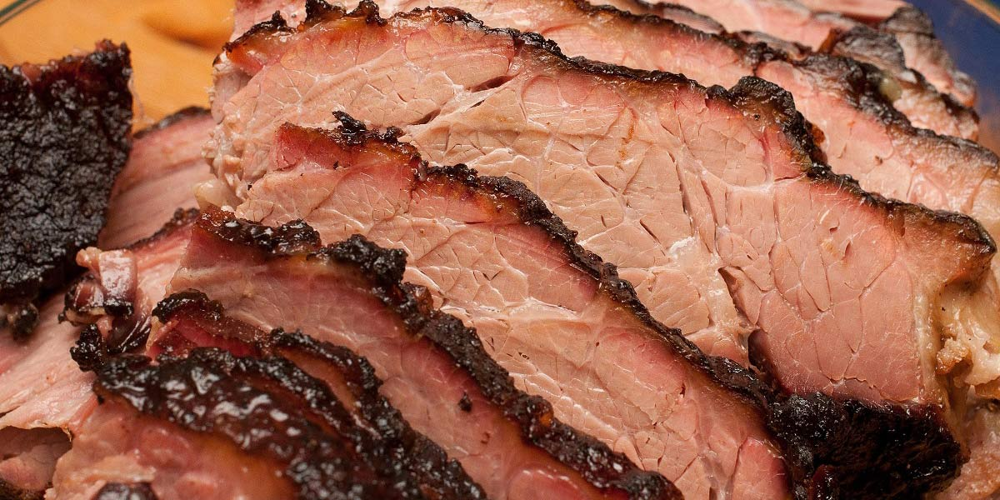

Brisket
Recipe Specification
Ingredients List
| Ingredients | Quantity |
|---|---|
| Brisket | 2kg |
| English Mustard Powder | 40g |
| Cider Vinegar | 200ml |
| Vegetable Oil | 90ml |
| Apple Juice | 200ml |
| Maldon Sea Salt | 30g |
| Brown Sugar | 45g |
| Black Peppercorns | 15g |
| Smoked Paprika | 15g |
| Ground Cumin | 15g |
| Cayenne Pepper | 1 tsp |
| Garlic Powder | 1 tsp |
| Dried Thyme | 1 tsp |
Yield: 6-8 portions
Preparation
- Grind salt, sugar, peppercorn, smoked paprika, cumin, cayenne, garlic powder and thyme in a pestle and mortar to make rub.
- Rub brisket with oil and dry rub.
- Mix English mustard, cider vinegar and apple juice before placing in a deep roasting tray.
- Pre-heat oven to 160’C.
Cooking Instructions
- Put a medium sized frying pan on a medium/high heat and add 30ml of vegetable oil.
- Sear brisket on all sides for an even brown.
- Place brisket on elevated wire rack and place wire rack in deep roasting tin.
- Cover roasting tin with 2 layers of foil and place in over for 3 and ½ hours.
- Remove foil from tin and transfer cooking liquor to medium sized saucepan. Place saucepan on a medium to high heat and reduce by half. Place brisket under foil and rest for 15 minutes.
- Slice brisket and add cooking juices to the top of it before serving.

Serving Suggestions
I love serving my brisket with either sweet potato wedges or piri-piri fries.
Storing instructions
Allow to cool to room temperature and put in an air-tight container before placing in the fridge. Consume with 4 days of making.
Reheating Instructions
Place in the microwave for 2-3 minutes.